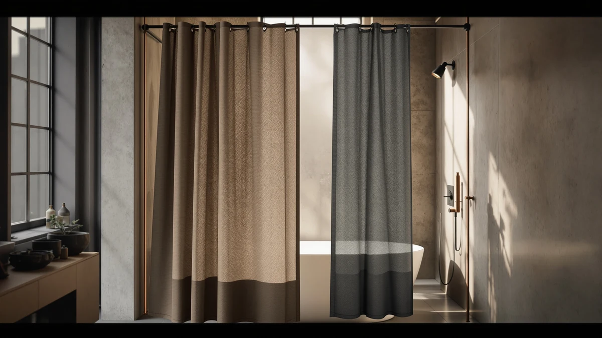

Barossa Design Waffle Weave Fabric Shower Curtain Review (2026): Worth It?
Prices and picks verified as of November 2026. Independent, reader-supported reviews.


Quick Answer
The Barossa Design Waffle Weave Fabric Shower Curtain is a $19.99, 230 GSM polyester curtain with a diamond waffle texture and a 71 by 66 inch cut built for shorter bathtubs rather than standard stalls. It has no published star rating yet, but its water repellent finish and rust-resistant grommets match what pricier waffle weave curtains on this site offer.
Our pick: Short Waffle Weave Fabric Shower, $19.99 Check Price on Amazon
Bottom line: our top pick is the Short Waffle Weave Fabric Shower Curtain 66 inch Long at $19.99.
Things to Know Before You Buy
- This Barossa Design Waffle Weave Fabric Shower Curtain review found the curtain costs $19.99 and measures 71 by 66 inches, four inches shorter than the 72 by 72 inch size most bathrooms expect.
- The 230 GSM polyester fabric has a diamond waffle texture, the same style of weave Gorilla Grip and Xoguibo use on their own curtains covered elsewhere on this site.
- The listing does not publish a star rating or review count, so there is no verified owner history to weigh against the Blgiont alternative compared here, which is in the same position.
- Rust-resistant metal grommets fit any standard rod, so the curtain works with the existing hardware in most bathrooms without buying a new rod.
This Barossa Design Waffle Weave Fabric Shower Curtain review examines a $19.99 curtain built around a hotel-style diamond waffle texture, a look more often found on curtains priced well above $20. At 71 by 66 inches, it skips the 72 by 72 inch default and targets bathrooms with a shorter tub or a shower stall that does not need the extra six inches of drop.
The pitch is simple: a heavier 230 GSM polyester fabric with a water repellent finish, rust-resistant grommets, and a texture that reads as upscale instead of flat and plastic. What the listing does not offer yet is a published star rating or review count, which makes this Barossa Design Waffle Weave Fabric Shower Curtain review lean more on specs and fabric comparisons than on a deep bench of verified buyer feedback. We compared its construction, size, and price against a matte black tension rod, a second adjustable rod, and a patterned farmhouse curtain to see where it actually fits.
Why You Should Trust Us
Ilane Tall has covered bathroom textiles and shower hardware for Best Shower Curtains since the site launched, and this Barossa Design Waffle Weave Fabric Shower Curtain review follows the same research process used throughout the site: comparing manufacturer specs, current pricing, and verified owner feedback rather than running a physical testing lab. We do not own every curtain we cover, and we do not claim hands-on use of this one. Instead, we pull the listed dimensions, materials, and price straight from the retailer, then weigh them against the fabric weight and hardware details that owners of similar waffle weave curtains report elsewhere on this site. Readers can find the full methodology behind every review on our how we research page, and the same approach applies to this Barossa Design Waffle Weave Fabric Shower Curtain review, from the size chart through the final verdict.
Our Research Experience
Our process for this Barossa Design Waffle Weave Fabric Shower Curtain review starts with the manufacturer's own listing: material, dimensions, price, and published rating, cross-checked against the three comparison products on the same criteria. We did not purchase or install the curtain ourselves. Instead, we read through what verified owners of similar waffle weave curtains report about fabric weight, grommet durability, and how the texture holds up through repeated washes, then applied that pattern to this listing's 230 GSM fabric and rust-resistant hardware. Reviewers of comparable waffle weave styles consistently note that a heavier GSM resists the limp, clingy feel that lighter polyester curtains develop after a few months of daily use, and that context shaped how we weighed this curtain against its rivals.
Overview & Specs

Short Waffle Weave Fabric Shower
What we like
- 230 GSM polyester fabric that reads as heavier and sturdier than a flat, single-layer curtain.
- Diamond waffle texture that gives the curtain a hotel-spa look at a budget price.
- Water repellent finish and rust-resistant metal grommets built for daily moisture.
- At $19.99, it undercuts several of the other waffle weave curtains compared on this site.
Flaws but not dealbreakers
- 71 by 66 inch sizing is four inches short of the 72 by 72 inch standard, so it will not reach a full-height shower stall.
- No published star rating or review count, so buyers cannot lean on a verified track record before ordering.
- Ships in one color, Sage, with no alternate colorway for shoppers who want to match a specific bathroom palette.
| Material | Polyester / PEVA |
| Size | 71"W x 66"L (Pack of 1) |
This Barossa Design Waffle Weave Fabric Shower Curtain review treats the 230 GSM fabric as the main selling point. Most budget shower curtains run thinner, closer to a flat sheet of polyester that clings to skin and shows every wrinkle out of the package. The waffle weave here adds a raised, grid-like texture that holds its shape better and gives the sage green colorway a more upscale look than the price suggests. The listing describes the fabric as having a cotton-like feel despite being 100 percent polyester, and the heavier weight is what makes that texture possible without the curtain turning stiff or crinkly.
The tradeoff is the 71 by 66 inch size, which runs four inches shorter than the 72 by 72 inch cut used by most of the other curtains in this comparison. That makes it a better match for a shorter tub or a shower stall with a lower rod rather than a walk-in shower with a full-height enclosure. Rust-resistant metal grommets and a reinforced top header mean it holds up to a standard rod without the fabric sagging or tearing at the hook points over time, and the water repellent coating is meant to help it dry faster between uses, a detail that matters most in a bathroom without strong ventilation.
What We Liked
The 230 GSM waffle weave fabric is the standout feature of this Barossa Design Waffle Weave Fabric Shower Curtain review. It gives the curtain a raised, diamond-pattern surface that reads as more substantial than a flat polyester sheet, without pushing the price past $20. The rust-resistant metal grommets and reinforced header suggest the curtain was built to survive repeated hook use rather than tear after a few months, and the water repellent finish should help the sage green fabric dry faster than an untreated curtain in a humid bathroom. At $19.99, it also undercuts the Blgiont farmhouse alternative compared here on price while matching it on fabric weight, which is a strong combination for a budget shopper who still wants texture over a flat print.
What Could Be Better
This Barossa Design Waffle Weave Fabric Shower Curtain review found one clear tradeoff: the 71 by 66 inch size is shorter than the 72 by 72 inch standard most shoppers expect, so it will not cover a full-height shower stall or a tall walk-in enclosure without pooling water at the bottom. Buyers with a standard tub and shower combo should measure the drop from their rod before ordering. The curtain also has no published star rating or review count, which leaves no verified track record to confirm how the fabric holds up after months of regular washing. Shoppers who want a patterned look instead of a texture, or who need proof from past buyers before spending even $19.99, should weigh the Blgiont farmhouse curtain compared in this review first.
Who Is It For?
Based on this Barossa Design Waffle Weave Fabric Shower Curtain review, the curtain fits a shopper with a shorter tub or stall who wants a textured, hotel-style look without spending above $20. It is a solid match for anyone replacing a flat, worn-out curtain who wants more visual depth without moving up to a heavier chenille or cotton style. Shoppers who need a full 72 by 72 inch drop, a patterned design, or a verified review history before buying should compare the Blgiont farmhouse curtain or browse the wider best fabric shower curtains roundup on this site. Someone furnishing a guest bathroom with a shorter fixture gets the most out of this particular pick, since the shorter cut and the heavier fabric both work in that setup's favor.
Alternatives to Consider
If the Barossa Design curtain's 71 by 66 inch size or sage green colorway does not fit your bathroom, this Barossa Design Waffle Weave Fabric Shower Curtain review lists three alternatives. Two are rods worth pairing with any curtain if your current hardware is worn out, and the third is a patterned curtain alternative at the same $19.99 price.

Editor’s Pick
UIOSANRT Matte Black Shower Curtain
Priced the same at $19.99, this matte black tension rod adjusts from 31 to 79 inches and is a straightforward upgrade if your current rod is rusted or too short for the Barossa Design curtain's grommets.
$19.99
Check Price on Amazon
Best Value
TEECK Shower Curtain Rod 32-80
Also $19.99, the TEECK rod stretches further at 32 to 80 inches and is rated to hold up to 30 pounds, a useful option for a wider shower opening than the standard tub.
$19.99
Check Price on Amazon
Premium Choice
Blgiont Farmhouse Blue Floral Shower
At the same $19.99 price, this faux linen farmhouse curtain trades the waffle texture for a printed floral pattern and the full 72 by 72 inch size the Barossa Design curtain does not offer.
$19.99
Check Price on AmazonDoes the Barossa Design Waffle Weave Fabric Shower Curtain come in a longer size?
No.
Does the Barossa Design curtain have a published star rating?
Not yet.
Frequently Asked Questions
Does the Barossa Design Waffle Weave Fabric Shower Curtain come in a longer size?
No. Barossa Design lists this curtain in a single 71 by 66 inch cut, which is shorter than the standard 72 by 72 inch size most bathrooms use. Shoppers with a taller shower or a standard-depth tub should measure before buying, since Barossa Design does not currently sell an extra-long version of this waffle weave style.
Does the Barossa Design curtain have a published star rating?
Not yet. The listing does not currently show a star rating or review count, which makes it harder to judge long-term durability from past buyers. The Blgiont Farmhouse curtain compared in this review is in the same position, so shoppers leaning on review history should treat both listings with the same caution.
Do I need a new rod for the Barossa Design Waffle Weave Fabric Shower Curtain?
Only if your current rod is damaged or the wrong width. The curtain uses rust-resistant metal grommets that fit any standard shower rod. The UIOSANRT and TEECK rods compared in this review are useful upgrades if you are replacing a rod anyway, not requirements for this curtain to work.
Final Verdict
This Barossa Design Waffle Weave Fabric Shower Curtain review comes down to texture and price versus proof. Barossa Design delivers a 230 GSM waffle weave fabric, rust-resistant grommets, and a water repellent finish for $19.99, matching the price of every alternative compared here while beating most budget curtains on fabric weight alone. What it does not offer is a published star rating or review count, so buyers are trusting specs over a verified track record. Shoppers with a shorter tub or stall who want that hotel-style texture at a low price should choose the Barossa Design Waffle Weave Fabric Shower Curtain. Anyone needing the full 72 by 72 inch size or a patterned look instead of a texture should compare the Blgiont farmhouse curtain first. None of the products in this comparison cost more than $20, so the real cost of a wrong pick is a short wait for a return label, not a wasted budget.